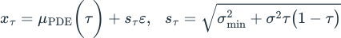
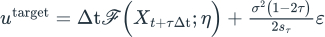
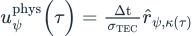
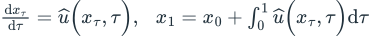

整体概括
给定过去 24 小时的全球 TEC 图及可用的历史物理信息，能否在不读取未来真实物理量的前提下，预测未来 1–24 小时的 TEC 演化？
作者用物理引导的 Flow Matching（流匹配，PGFM）学习一小时状态转移：训练时用 TIEGCM 模拟的中间状态构造路径；推断时融合数据分支与物理预测分支，逐小时滚动到一天。
做了什么
用物理演化定义“怎么走”，再让两个神经网络分支共同估计“往哪走、多快走”。它不是直接把某一张 TEC 图映射成 24 小时后的图。
证明到哪一步
在一年 TIEGCM 模拟数据上，相比 ConvLSTM，1–24 h 平均 RMSE 下降 39.2%；这是对模拟参考场的预测改进，不是实测 GNSS 定位精度提高 39.2%。
最值得借鉴
物理知识可以进入训练路径、目标场和空间融合，而不只进入损失函数。但迁移到真实 GIM 时，首先要解决物理过程输入从哪里来。
Research gap
纯物理预报
还缺什么动力学有物理依据，但运行计算与驱动信息要求较高。
本文的回应学习可快速推断的状态演化代理模型，同时保留物理信息入口。
纯数据驱动预报
还缺什么可以拟合统计关系，却不自动保证学到的演化与电离层动力学一致。
本文的回应把电子连续性方程相关的过程信息引入生成式预报。
通用 Flow Matching
还缺什么人为插值连接两个端点，不一定经过符合真实物理演化的中间状态。
本文的回应让条件路径均值沿模拟物理演化走，再学习其速度目标。
这是对作者研究动机的归纳，不是我们完成了全领域查新。本文的区别应落在“物理路径 + 空间自适应融合”的组合上，不宜仅概括为“首次把深度学习用于 TEC 预测”。
算法主线

原图由 arXiv 加载；若未显示，可打开下方原图链接。
跟着原图读
- 先看左侧：输入来自哪里
历史 TEC 与外部驱动进入预报框架；图中用 F10.7、Kp 等作概念展示，完整驱动和过程输入要看附录，不能把它简化成只有 TEC 与 Kp。
- 再看中间：物理如何参与
上方是 Flow Matching，下方列出电子产生、损失与输运过程，表达“学习与物理结合”的总体思路。它不是双分支网络的逐层接线图。
- 最后看右侧：输出是什么
输出是未来 TEC 场序列，不是 GNSS 坐标。接着看下方本站教学图，才能把数据分支、物理分支、λ 融合与逐小时滚动对应起来。
这张概念总览没有画出全部 U-Net / ConvGRU 结构与训练、推断差别；不能仅凭这一张图复现算法。
历史信息
- 过去 24 h TEC 图 H(t)
- 历史驱动 D(t)：太阳、地磁与边界场
- 历史过程 P(t)：产生、损失、漂移、风输运
数据分支 · 条件 U-Net
输入当前流状态 xτ、τ 与编码后的历史信息，输出数据驱动速度 u_data。
物理分支 · 因果 ConvGRU
由历史过程与驱动预测未来净 TEC 变化率，再换算为流空间速度 u_phys。
逐网格权重 λ(τ) 融合两个速度场
u_hat = (1 − λ) × u_data + λ × u_phys
积分 τ：0 → 1，得到下一小时 TEC 图
把预测 TEC 放回历史窗口，逐小时滚动，最长 24 h；每小时重新开始一个流区间。
训练专用：TIEGCM 中间状态 → 物理引导概率路径 → 目标速度 → 与融合速度做均方误差匹配。这个目标路径在业务推断时并不可直接读取。
附录比框架图更具体
D(t) 不只有 F10.7 与 Kp：附录列出 8 个标量通道和 3 个空间通道。历史 TEC 编码 16 通道，空间驱动 12 通道，标量驱动 8 通道，再加 xτ 与 τ，合计 38 通道送入 U-Net。
两个时间不要混
t 是物理时间，τ∈[0,1] 是一次生成转移内部的归一化坐标。本文一次转移的 Δt=1 h；τ=1 不是“已经预测到第 24 小时”。流速度也不是电子的实际漂移速度。
关键公式
先看每条公式下面的直觉，再展开符号与实现提醒。不熟悉 Flow Matching 也可以先读融合与推断两式，之后回看路径设计。
公式已预先排成矢量图，手机和旧浏览器无需联网加载公式服务。窄屏可横向滑动；省略的条件输入已在解释中说明。排版使用 MathJax 3.2.2，Apache 2.0 许可；读者设备不运行该排版库。
物理从哪里来：先看电子连续性方程
一句话：电子会产生、消失，也会被输运。作者对高度方向积分，把这些过程关联到 TEC 的变化，再抽象成 dX/dt=F(X;η)。
符号与实现提醒
- Nₑ / Pₑ / Lₑ
- 电子密度、产生率、损失率。
- Vₑ / ∇·
- 电子速度与通量散度；此处是物理空间中的输运，别与流匹配速度混同。
原文 (7) 的 TEC 平衡是近似式，并讨论了忽略可变上边界的积分修正；不能把模型说成无条件严格守恒。
改变训练路径：均值不再只是端点连直线
让中途经过的状态也有物理依据，而不只要求起点终点对得上。训练实现利用同一转移内的模拟中间状态做分段线性插值。
符号与实现提醒
- μPDE(τ)
- 条件概率路径的均值，不是每一个随机样本的轨迹。
- F / η / Δt
- 物理演化算子、驱动或参数、一小时物理预报间隔。
这里按正文物理坐标表达；实际网络用训练集统计量标准化。中间真值可用于构造训练目标，不等于推断时能获取未来真值。
到底拟合什么：路径样本与其导数


Flow Matching 学的不是下一张图本身，而是“当前中间态应如何变化”的速度。求导时必须带上 Δt；噪声项的系数也随 τ 改变。
符号与实现提醒
- ε ∼ N(0,I)
- 高斯噪声。对同一条条件路径求导时固定 ε。
- σmin / σ / sτ
- 控制端点和区间内部的噪声尺度；不是模型误差的置信区间。
“生成式”不自动意味着已给出可靠预报区间。本文主结果是误差指标，本页没有把未校准的采样差异当成可靠不确定性。
容易漏的实现细节：两路速度先统一单位

ConvGRU 输出的 r̂ 是 TECU/s，U-Net 输出的是标准化状态对 τ 的变化率。先乘 Δt=3600 s，再除训练集 TEC 标准差，才能相加。
符号与实现提醒
- σTEC
- 仅由训练数据估计的 TEC 标准差，区别于路径噪声 σ。
- κ(τ)
- 从物理分支输出的 K 个子步中选对应一步，原文 (28) 定义其索引。
若直接把 TECU/s 与标准化速度混合，即便代码能运行也改变了模型含义。复现时要同时检查时间单位和归一化。
如何融合：每个格点都有自己的物理权重
λ 接近 1 时偏向物理分支，接近 0 时偏向数据分支。不是用一个固定比例覆盖全球，也不是把整张 TEC 图简单做加权平均。
符号与实现提醒
- λ(τ) ∈ [0,1]ᴴˣᵂ
- 可学习的空间权重图，随流坐标变化。
- ⊙ / θ / ψ
- 逐元素乘法，以及两路网络的参数。为便于阅读，这里省略条件输入下标。
权重图体现模型如何组合两个估计，不等于真实物理因果贡献率，也不能直接当作预测置信度。
训练目标：让融合速度逼近目标速度
采样一小时转移、τ 和噪声，生成 xτ 与目标速度，再共同优化两路网络和融合权重。这里省略 H(t)、D(t)、P(t) 等条件输入以突出主线。
符号与实现提醒
- E / ‖·‖²₂
- 对训练采样取期望，以及速度图上的平方误差。
本文展示的核心目标是融合速度回归；不要未经依据把它改写成“数据损失 + 独立 PDE 残差损失”的典型 PINN 结构。
推断：积分一次只前进一小时

从当前 TEC 状态出发，在流坐标上数值积分，终点反标准化得到下一小时 TEC；再更新历史 TEC 窗口并重复。
符号与实现提醒
- x₀ / x₁
- 标准化坐标中的当前状态和下一小时状态，不是物理时间编号。
Operational 版本不使用未来真实过程；Oracle 使用未来真值，只是诊断配置。要精确复现，还需确认多步过程中外部驱动与过程历史如何更新，不能自行假设可以读入未来观测。
实验怎么做
- 参考数据
- TIEGCM v3.0 的一年模拟输出；不是 IGS 实测 GIM。
- 空间与时间
- 2.5° × 2.5°，72 × 144 网格；模拟输出间隔 15 min，预报按小时进行。
- TEC 的范围
- 对模拟垂直柱电子密度积分，下边界约 97 km、上边界约 600 km 且可变；不等于真实 GNSS 传播路径全部电子含量。
- 输入 / 输出
- 过去 24 h TEC 与历史物理信息 → 一小时转移 → 自回归至 24 h。
- 数据划分
- 每月留 3 天测试、2 天验证；全年训练 / 验证 / 测试为 305 / 24 / 36 天。
- 计算成本
- 作者报告 2 张 A100（各 80 GB），每次训练约 6 h、一天预报约 20 s；不等于普通电脑的运行时间。
重点比较谁？
ConvLSTM
时空递归深度学习基线，同样逐小时滚动；适合回答比常规数据模型好多少。
FMB
保留同一流匹配框架、历史条件与滚动协议，移除物理引导组件；用于评估这些组件的组合增益。
Oracle ≠ 业务模型
把未来真实物理信息交给同架构模型，只作诊断；不纳入可部署模型排名，也不作为本站图中的对手。
指标口径：RMSE 强调大误差，MAE 是平均绝对误差；nMAE = 100 × 绝对误差之和 / 参考 TEC 绝对值之和。它不是逐格点百分比误差的平均；要复现全球结果，应核对有效网格及聚合方式。
提升与证据
均相对 ConvLSTM。前者为原文报告，后者由原表三位小数计算；仅在该模拟实验条件下成立。
当前：RMSE · 1–24 h 全时效平均，越低越好。
查看数值表：选定时效与全时效平均
| 指标 | 时效 | ConvLSTM | FMB | PGFM |
|---|---|---|---|---|
| RMSE | 1 h | 1.654 | 0.442 | 0.269 |
| RMSE | 3 h | 2.838 | 1.151 | 0.703 |
| RMSE | 6 h | 3.164 | 1.726 | 1.234 |
| RMSE | 12 h | 3.054 | 2.562 | 1.869 |
| RMSE | 24 h | 3.439 | 3.636 | 3.266 |
| RMSE | 1–24 h 平均 | 3.114 | 2.482 | 1.892 |
| MAE | 1 h | 1.235 | 0.308 | 0.204 |
| MAE | 3 h | 1.881 | 0.781 | 0.527 |
| MAE | 6 h | 2.234 | 1.235 | 0.912 |
| MAE | 12 h | 2.262 | 1.871 | 1.374 |
| MAE | 24 h | 2.282 | 2.642 | 2.139 |
| MAE | 1–24 h 平均 | 2.250 | 1.785 | 1.341 |
| nMAE | 1 h | 5.561 | 1.218 | 0.916 |
| nMAE | 3 h | 9.472 | 3.047 | 2.335 |
| nMAE | 6 h | 10.923 | 4.820 | 4.034 |
| nMAE | 12 h | 10.472 | 7.616 | 6.295 |
| nMAE | 24 h | 10.266 | 10.422 | 9.461 |
| nMAE | 1–24 h 平均 | 10.607 | 7.246 | 6.119 |
平均改进很大，但别套到每个时效
原表报告：1–24 h 平均 RMSE，PGFM 为 1.892 TECU，ConvLSTM 为 3.114 TECU，相对下降 39.2%；对 FMB 为 23.8%。但 24 h 单点是 3.266 对 3.439 TECU，按表中四舍五入值计算仅下降约 5.0%。两种说法的统计口径不同。
误差分布不能只看全球平均
Fig.5 的 2023-03-29 个例中，低纬误差随时效增长更明显。Fig.6 显示低纬绝对误差较高，而高纬背景 TEC 较低，归一化误差可能更高。图中的纬度曲线做了五点平滑，仅用于可视化。

原图由 arXiv 加载；若未显示，可打开下方原图链接。
跟着原图读
- 先纵向：同一时效看三行
先比较参考与预测的低纬双峰、峰值位置和昼夜结构，再看差值行。参考来自 TIEGCM 模拟，不是实测 GIM。
- 再横向：误差如何随预报变远
从 1 h 看向 12 h，留意低纬区域更明显的结构化差异。不能只因为前两行颜色相近，就认为远期误差可以忽略。
- 读色标：不要把两套单位范围混用
上两行是 0–80 TECU 的 TEC；差值行用独立的 −10 至 10 TECU 色标。颜色必须结合各自色标读，不能跨行直接按颜色比较数值。
这是一个起报时刻的空间个例，不包含第 24 h，也不能代替全年测试集的统计评价。原始图仅 695 × 331 像素，放大可方便读图，但不会增加原始细节。
权重图提供线索，不是因果证明
作者观察到低纬区域物理权重相对较大，高纬相对较小；Fig.9 展示两分支与融合后的速度结构。它支持“模型学会空间差异化组合”的解释，但不能独立证明物理机理被完全辨识。

原图由 arXiv 加载；若未显示，可打开下方原图链接。
跟着原图读
- A：先看趋势，再看空间离散
作者先对各格点的测试样本权重取平均。A 中实线为纬向中位数、虚线为均值，深浅阴影分别表示四分位区间与 10–90% 范围；这些阴影不是预报误差置信区间。
- B：把纬度趋势放回地图
低纬平均 λ 较高、极区较低；结合融合式，表示该模型在低纬更偏向物理分支，在极区更偏向数据分支。色标范围为 0–1。
- C / D：看物理过程，不要当作 λ
这两幅极区图使用另一套有正负值的 TECU/h 色标，是高度积分净 O⁺ 变化率的时刻快照。它们给出过程背景，不是 B 的极区权重放大图。
λ 是模型组合两个速度估计的权重，不是物理过程的真实因果贡献率，也不是预测可信概率。C / D 是单时刻过程图，不能与测试样本平均权重当作同一统计量。
局限与追问
下面把作者已展示的证据与进一步需要验证的问题分开。提出追问，不等于已经证明论文有问题。
模拟到实测的鸿沟
原文范围本文训练与评价参考均来自 TIEGCM；模型输入还包括通常不能直接从常规 GIM 获得的物理过程历史。
本站追问真实业务里如何获得或估计这些过程？在不同 GIM 产品、不同年份和磁暴条件下还能否保持增益？
训练 / 测试边界仍需复核
原文范围论文报告按月留天划分，而不是完整跨年外推。
本站追问复现时检查 24 h 滑窗与标签是否跨越划分边界，并安排跨年、事件隔离测试。这里提出检查项，不直接断言作者存在数据泄漏。
生成能力不等于可靠不确定性
原文范围主体结果报告 RMSE、MAE、nMAE 与空间分析。
本站追问若要把生成样本当预报区间，还应检查覆盖率、校准与概率评分；不能只根据 RMSE 宣称风险已可量化。
复现完整度有待补齐
原文范围已读版本给出了网络结构和硬件耗时，但本次核读未取得可直接运行的作者训练工程。
本站追问正式复现前需确认代码与数据入口、ODE 求解器和步数、优化超参、随机种子、过程与驱动的滚动策略；不能只凭这页导读承诺跑出同样结果。
连接你的研究
以下是本站面向你的研究方向提出的实验建议，不是原文已证实的结论。建议先解决输入可获得性，再考虑换模型；不要直接把模拟 TEC 的误差改善写成 PPP 定位收益。
第一步 · 做可部署的真实 TEC 预测基线
先用能稳定取得的 TEC 与截至预报起点已知的太阳 / 地磁信息，对比持续性、ConvLSTM 与无物理 FM。按时间隔离年份和磁暴事件，并固定同一输入与滚动方式。
应交付：先交付逐时效、纬度带、平静 / 扰动期误差表，而不是先堆模型。
第二步 · 再验证物理引导到底值不值
明确 P(t) 来自物理模拟、同化还是代理估计，以及业务延迟与成本。做 2×2 消融：有 / 无物理路径 × 有 / 无自适应融合，并单列输入不完整的情况。
应交付：区分额外输入带来的收益与结构设计带来的收益，补充不同随机种子的波动。
第三步 · 接入 GNSS 定位与监测评价
把预报 TEC 变成定位链路中可使用的电离层信息，再实测 PPP 收敛时间、定位误差与扰动后的恢复时间。ROTI 可作为扰动分层或可用历史特征，但 TEC 改进不能直接推出 ROTI 监测改进。
应交付：用站点 / 卫星 / 事件隔离检验实际定位收益，防止从全球 TEC 指标跨级推断。
跨到工程感知与具身智能，借鉴什么？
与具身智能、工程感知的交叉点是“学习动力学 + 物理先验 + 自适应融合”的设计思路，而不是现成的机器人算法。用于机器人状态预测时，还要重新定义状态、动力学、可观测输入与闭环安全评价。
读完能回答这三个问题吗？
τ=1 是否表示预测到了明天？
不是。本文一次 τ∈[0,1] 的积分只完成 Δt=1 h 的状态转移；一天预报通过逐小时重复得到。
39.2% 能否写成第 24 小时误差下降？
不能。它是 1–24 h 平均 RMSE 相对 ConvLSTM 的下降；24 h 单点按原表数值算约为 5.0%。
如果只有真实 GIM 和 Kp，能否直接复用原方法？
不能默认完整复用。还缺物理过程历史及附录中的其他驱动，需要可获得性审计、合理代理与对应消融。
来源与边界
原论文使用 arXiv 非独占分发许可，不是 CC BY，不能据此认定获得任意转载授权。为逐图评述，本页从 arXiv 官方图源嵌入 Fig.3、5、8，版权仍归相应权利人；不在本站仓库或发布文件中镜像作者图片、PDF 或全文。另行转载需核对许可并向权利人确认。外部原图能否加载取决于读者访问 arXiv 的网络条件，图下保留原图直达与原文定位。流程图和路径图为本站独立教学示意，结果图按原表重绘，均与原文图明确区分。
对照英文原始摘要
收录历史：2026-10-29
这篇导读独立保存，不替换其他论文的摘要级解读；日更重建会保留本示范。本站建议与作者结论已分开标记。